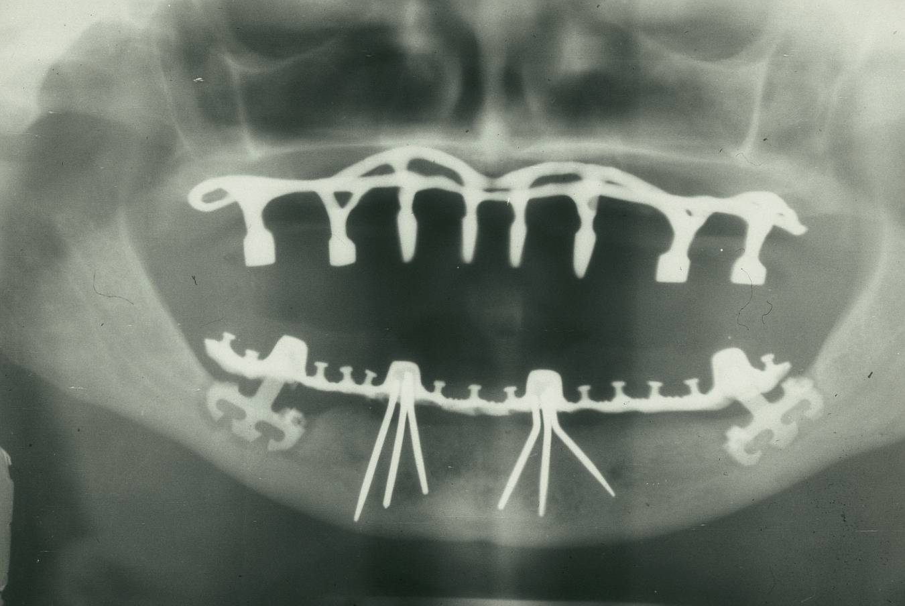

TEETH

Dentistry ( English : Dentistry ), also known as Oral Medicine , is a branch of medicine consists of a study
and diagnosis and prevention and treatment of diseases and disorders and cases of oral cavity, usually in
the teeth (evolution and arrangement of teeth ) as well as the oral mucosa and fittings and adjacent
associated tissue Especially in the maxillofacial area. field of dentistry includes in addition to other
aspects of the craniofacial complex including the temporomandibular joint and other supporting, muscular,
lymphatic, nervous, vascular, and anatomical structures. The practitioner is called a dentist .
Dentistry is often understood to include the largely defunct medical specialty of oral medicine (the study
of the mouth and its disorders and diseases) which is why the two terms are used interchangeably in certain
areas. For example, in Australia , oral medicine is a specialty of dentistry. However, some specialties such
as oral and maxillofacial surgery (facial reconstruction) may require degrees in medicine and dentistry to
achieve. Dentistry and some branches of medicine in European history have been considered to stem from the
barber surgeons trade . However, both fields have since developed with greater emphasis in the life sciences
, evidence-based research and evidence- based practice .
Dental treatments are performed by a dental team, which often consists of a dentist and dental assistants
(dentist assistants, dental hygienists , dental technicians as well as dental therapists ). Most dentists
work either in private clinics ( primary health care ), dental hospitals, or (secondary care) institutions (
prisons , military bases, etc.).
The history of dentistry is as old as the history of mankind and civilization, with the oldest evidence
dating back to between 7000 BC and 5500 BC. show the remains of the skeletons of Mehrgarh (now in Pakistan )
, dated to that time evidence of dental tools drilling flint to remove decay , which is the way they found
"surprisingly effective." Dentistry is believed to be the first medical specialty that developed its degree
with its own specialties. modern evidence-based dentistry movement advocates the use of high-quality
scientific research and evidence to guide decision-making such as dental preservation .Manually, use of
water treatment fluoride and toothpaste with fluoride, dealing with oral diseases such as dental caries and
periodontal disease age , as well as regular diseases such as osteoporosis and diabetes and diseases of
digestive disorders and cancer and HIV / AIDS AIDS , which can also affect the cavity the mouth.
Other practices related to evidence-based dentistry include oral radiographs to check for tooth deformity or
oral infections, hematology (study of blood) to avoid bleeding complications during dental surgery ,
cardiology (due to various serious complications from dental surgery for heart patients), etc.
. Term
The term dentistry comes from dentist , which is derived from the French and Latin word for tooth. The term
dental science and its diseases is also used to refer to scientific studies related to teeth ( Greek : ὀδούς
) meaning tooth, which is the study of the structure, development and distortions of teeth
. Dental Treatment
Dentistry usually includes procedures related to the oral cavity. Oral diseases are also considered, according
to the World Health Organization , among the main common public health problems due to their wide spread around
the world and their many infections.
Most dental treatments are done to prevent or treat the two most common oral diseases, which are dental caries
(tooth decay) and periodontal diseases ( gum disease and periodontitis ). Common treatments include dental
restorations , extraction and surgical extraction, removal of sediment limestone and Otakecar and scrape the
root and cleaning of periodontal pockets and root canal treatment endodontic , and cosmetic dentistry .
The duration of the study of dentistry is usually not less than 4 years, and the period varies according to the
country and the educational system, for example, all dentists in the United States of America pass at least
three years of university study, and almost all of them succeed in obtaining a bachelor’s degree. This
educational attainment is followed by four years of study in the College of Dentistry to qualify him as a Doctor
of Dental Surgery (DDS) or a Doctor of Dental Medicine (DMD). In Egyptian universities, the study period is 5
years, in addition to a sixth year, which is the year of excellence, where the doctor passes through all dental
departments to practice the largest number of cases. Depending on the nature of their general training, they can
perform most dental treatments such as restorative treatments (restoration, crowns and bridges ), prosthetic
treatments (movable devices), andCores processors and processors supporting tissue ( gum ) and take off the
teeth and perform tests and radiographs (x-rays) and diagnosis . Dentists may also prescribe medications such as
antibiotics , analgesics, or other medications used in patient management.
There are specialties in dentistry such as restorative dentistry, fixed and removable prosthodontics, oral and
maxillofacial surgery, oral medicine, periodontology, pediatric dentistry, orthodontics and radiation dentistry.
Dentists also encourage the prevention of oral disease through controlled oral hygiene and regular twice-yearly
medical examinations for professional assessment and cleaning. Oral infections and infections may affect the
general health of the individual, and some signs may appear in the oral cavity that are indicative of systemic
diseases such as osteoporosis , diabetes , gastrointestinal diseases or cancer .
Several studies have also shown that gum disease is associated with a higher risk of diabetes, heart disease and
premature birth. The concept of the possibility of the impact of oral health on systemic health and disease is
expressed as "oral-systemic health".
. Education and licensing
Dr. John M. Harris established the world's first dental school in Bainbridge, Ohio and helped establish
dentistry as a health profession. The school was opened on February 21, 1828 and is today a Sunni museum.
The first dental college was Baltimore College of Dental Surgery Baltimore College of Dental Surgery in
Baltimore, Maryland, US Baltimore, Maryland in the United States of America in 1840. The second college of
dentistry in the United States of America was Philadelphia College of Dental Surgery, which was It was founded
in 1852. In 1907 Templ University accepted a financial bid to incorporate the college.
Studies have shown that dentists who graduated from different countries and even from different dental colleges
in the same country may make different clinical decisions for the same clinical situation.
In the United Kingdom the British Dentists Act 1878 and the Register of Dentists 1879 established that the title
of dentist and dental surgeon be granted to registered and qualified practitioners only but that others may
legally describe themselves as dental experts or dental consultants. The practice of dentistry in the UK is now
fully regulated thanks to the Dentists Act 1921 which mandated membership registration for anyone practicing
dentistry. The British Dental Association, which was formed in 1880 and headed by Sir John Toms, played a major
role in prosecuting dentists who practiced illegally. Dentists in the UK are now regulated by the General Dental
Council.
In Korea, Taiwan, Japan, Finland, Sweden, Brazil, Chile, USA and Canada a dentist is a healthcare professional
qualified to practice postgraduate dentistry with a DDS Doctor in Dental Surgery or a DMD Doctor of Dental
Medicine These are equivalent to the Bachelor of Dental Surgery/Baccalaureus Dentalis Chirurgiae (BDS, BDent,
BChD, BDSc) degree awarded in the United Kingdom and the British Commonwealth of Nations. In most countries to
become a qualified dentist one usually has to complete at least four years of university study and within the
European Union the duration of education is at least five years. Dentists usually do five to eight years of
undergraduate education and undergraduate and postgraduate training before practicing the profession.
. Specializations
Some dentists conduct additional training after obtaining their first degree for the purpose of specialization.
The specializations recognized by the Sunni registration bodies differ from one place to another, and according
to countries and universities. Examples of specializations:
Public Dental Health : It includes the study of the epidemiology and social health policies related to oral
health.
Preventive Dentistry
Oral medicine : clinical evaluation and diagnosis of oral mucosal diseases.
Oral diseases
Oral and dental tissues
Conservative dentistry (conservative and endodontic dentistry): the art and science of restoring the shape and
function of a tooth after it has been destroyed by both carious and non-carious lesions. The term conservative
therapy is used if the treatment does not involve interference with the dental pulp or root canals.
Endodontics
Dental material , which is the study of all dental related materials such as filling materials, stamps, and
others
dental anatomy
Forensic dentistry : This specialty aims to collect and use dental evidence in law. This can be done by any
dentist with experience and training in this field. The primary function of the forensic dentist is
documentation and verification of identities.
Geriatric Dentistry: Providing dental care for the elderly, including diagnosis, prevention, and treatment of
age-related problems and age-related diseases within a multidisciplinary team of health care practitioners.
Surgery of the mouth
Oral and Maxillofacial Surgery
Oral and maxillofacial radiology: a study of radiographic interpretation of oral and maxillofacial pathology.
Oral Biology: Research in dental and craniofacial biology.
Aware of Dental Implants : The Art and Science Almgulwah dental dental implants replaced.
Orthodontics : straightening and aligning the teeth and adjusting the growth of the middle face and lower jaw.
Pediatric dentistry
periodontal disease
Prosthetic dentistry : Prosthodontics : includes fixed bridges, implants, over-implants, and dental devices,
complete or partial dentures.
Some prosthodontists deepen their training in oral and maxillofacial prosthodontics, which is the curriculum
related to the replacement and replacement of missing facial structures such as ears, eyes, nose, etc.
Special Needs Dentistry or Special Care Dentistry: Dentistry for people with developmental or acquired
disabilities.
Veterinary dentistry is a specialty of veterinary medicine - the part of dentistry concerned with animal care.
. History of dentistry
The rate of dental caries was low in pre-agricultural societies, but the growth in agricultural societies about
10,000 years ago led to an increase in dental caries.
The oldest recorded dental practice between 13,820 and 14,160 years old was found in Italy for a tooth that had
been cleaned with flint stones . Although there is a study in 2017 indicates that human primitive (Neanderthal)
has been used primitive dental tools. Evidence of dental practice was also found in the Indus civilization 7000
BC. Researchers have found a place in Mehrgarh that is believed to have been intended to treat dental diseases
with primitive tools such as drill brackets, and it appears that this was done by skilled craftsmen. These
ancient tools of antiquity were simulated and turned out to be effective and convenient tools. The oldest dental
filling process is 6500 years old in Slovenia and was used beeswax. The practice of dentistry in Malta has been
proven in prehistoric timesThrough a skull dating back to 2500 BC an abscess of the root of a tooth had been
excised .
A Sumerian text dating back to 5000 BC described the mouth worm as a cause of tooth decay. Evidence for this
belief was also found in: Egyptian, Indian, Chinese, and Japanese history. The legend of the mouth worm was
mentioned in the writings of Homer. In the late fourteenth century, the surgeon (Guy de Chauliac) believed that
worms were a cause of tooth decay.
Prescriptions for the treatment of dental pain and inflammation are spread in the Lahun papyrus, the Ebers
papyrus , the Brogosh papyrus, and the Horst papyrus in ancient Egypt . In the Edwin Smith Papyrus, written in
the seventeenth century BC but believed to reflect experiences dating back to 3,000 BC, treatment methods for
jaw fractures are discussed . In the eighteenth century BC, the Code of Hammurabi - the constitution of laws
during the reign of the sixth king of the ancient kingdom of Babylon - referred to tooth extraction twice in the
context of punishments. Examinations of the remains of the ancient Egyptians and the Greeks also revealed their
attempts in the field of prosthodontics. There is a possibility that this type of attempt was applied to the
deceased to appear better.
Several Greek scholars such as Hippocrates and Aristotle wrote about dentistry. As they mentioned the method of
tooth eruption and the treatment of its decay, and tooth extraction by means of clamps and connecting teeth to
each other using wires to fix loose teeth, as well as gum diseases and jaw fractures. Some trace the first use
of dental appliances and dental bridges to the Etruscans (inhabitants of Italy) 700 BC. In ancient Egypt,
Hessi-Ra was the first person to be named a "dentist" in history. The Egyptians knew that the teeth were tied
together with gold wires. The Roman medical writer Cornelius Celsus wrote extensively on dental diseases and
their treatments, such as on anesthesia and vasopressors . The first dental filling process was documented
withDental amalgam with a medical text of the ruling dynasty of China called ( Tang ) written by the Chinese
physician (Su Kong) in 659 AD and it was presented in Germany in 1528 AD.
Among the Muslim scholars we mention ( Abu Bakr al-Razi ) (932 AD), who spoke about the anatomy of the jaws and
teeth in detail, as well as the great surgeon Abu al-Qasim al-Zahrawi, who designed and drew many surgical tools
that approximate their accuracy to the current tools, and Ibn Sina spoke in his famous book The Canon of
Medicine about the treatment of Jaw fractures and the necessity of splinting the fractured pieces in their
correct position, as evidenced by occluding the teeth in place from the dental arch. Then it came Abulcasis
wrote a book drainageHe talked about dental surgery, explaining and pictures of swabs for cleaning teeth from
calculus, as well as explaining and depicting clasps (plural of clamps) for tooth extraction, mentioning the
process of making bridges to stabilize weak teeth, and also mentioning the process of sawing teeth and
interlacing molars and teeth with threads of gold and silver and found machines to cut excess flesh from the
gums, and mentioned complications caused by dental disease and came to mention fistulas oral associated with
dental pests disease was recommended Labaki fistulas Bmkkawi with capital commensurate capacity with the
capacity of the lumen fistula and wrote about the crowbar as a tool for tooth extraction and warned of leaving
the roots and talked about fractions of jaws and take off TMJ and lip rabbit tumor Aldvdei
Historically, tooth extraction was used as a treatment for some diseases. In the Middle Ages , dentistry was not
an independent profession during the nineteenth century, but was practiced by general practitioners and barbers
. And the role of barbers was limited to tooth extraction operations to relieve the pain caused by chronic
inflammation of the tooth. The tools used in tooth extraction are extensions of machines used in previous
centuries. In the fourteenth century, Guy de Chauliac invented a swan-like device for extracting teeth, and this
device was used until the late eighteenth century . Then it was replaced by the so-called (tooth key). In the
twentieth century it was replaced by modern dogs.
The first dental book to focus solely on dentistry was Artzney Buchlein, written in 1530. The first dental book
written in English was Operator for the Teeth (literally: a dental therapist) written by Charles Allen in 1685.
In the United Kingdom, there were no specific qualifications for those who wanted to provide dental treatment
until 1859. In 1921, training and familiarity with the field was made a condition for its practice. In 1979 the
Royal Commission Health issued a report stating that registered dentists per 10,000 inhabitants were more than
double the number in 1921.

. Modern dentistry
Modern dentistry originated between 1650 and 1800. The French physician Pierre Fauchard was called the
father of modern dentistry. He was a skilled surgeon who, despite the limitations of primitive surgical
tools in the late 17th and early 18th centuries, was able to significantly develop dental tools by modifying
the tools of watchmakers, jewelers and even barbers, which were believed to be useful in dentist. Insert
dental fillings as a treatment for dental holes. He also emphasized that acids derived from sugars such as
tartaric acid are responsible for dental caries, and pointed out that tumors surrounding the teeth and gums
may appear in late stages of dental caries.
Fauchard was a pioneer of prosthodontics, and he pioneered many ways to replace missing teeth. He said that
the replacement teeth can be made of blocks of ivory or bone. Fauchard introduced dental braces - although
they were of gold - he discovered that the position of the teeth could be corrected given that the teeth
followed the shape of the wires. Fasten the brackets with waxed linen or silk threads. Fauchard's
contributions to dental science lie in his book published in 1728 entitled The Surgeon Dentist. The French
text included the anatomy and functions of the mouth, dental structures, various techniques for healing and
dental surgery, and in this book a practical chapter between dentistry and surgery in its general sense.
The study of dentistry expanded rapidly after Fauchard. The British surgeon John Hunter wrote two important
books: The Natural History of Human Teeth (1771) and (A Practical Study of Oral Diseases (1778). And he
began to theorize the possibility of transferring teeth from one person to another, and said that the
chances of success of the dental transfer process rise when the tooth is transferred as quickly as possible
and is in size with the recipient person. These principles are still used in internal organ transplants.
Hunter has already performed several pioneering operations in which he has attempted to transfer teeth from
one person to another. Although the donated teeth did not adhere well to the recipient's gums, one of
Hunter's patients said that 3 of the teeth that Hunter transferred to him held for 6 years, which is
considered an important achievement in that period.
The tremendous advance in dentistry was in the nineteenth century when dentistry transformed from a trade
into a profession. The dental profession was subject to government regulatory laws at the end of the
nineteenth century, so the Dental Ordinance was passed in Britain, for example in 1878, and the British
Dental Association was established in 1879, and in the same year, Francis Brody Emlach was elected to head
the Royal College of Surgeons and thus was the first dentist ever to reach this This position puts dentistry
on a par with clinical surgery.
. Risks of practicing modern dentistry
The dental profession includes many health risks for the dentist, dental assistant, nurse and radiographer.
These risks include:
1. Musculoskeletal disorders due to improper positions that the dentist is forced to take during treatment,
which harms the skeleton and muscles in the long run.
2. Infection from patients
3. The dangers of the dental clinic environment, including artificial noise, lighting, psychological and social
pressures, and dental materials that the dental practitioner can touch or inhale, which leads to sensitivity or
poisoning sometimes